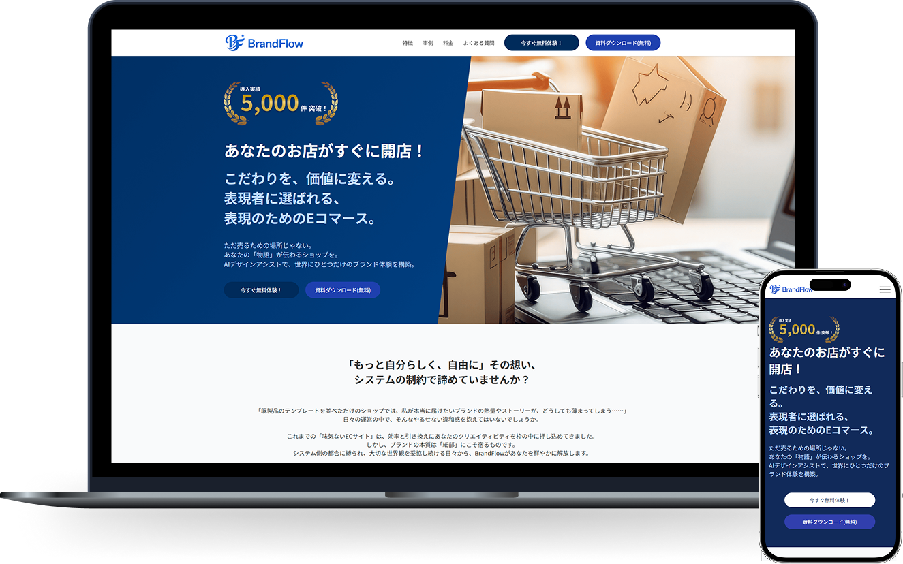

制作物

BrandFlow
design / coding
- URL
- https://qiu7917.github.io/brandflow/
- 概要
- 次世代D2Cプラットフォームのサービス紹介・コンバージョン獲得用LPです。システムの制約にとらわれず「自分らしく、自由に」ショップを構築できるというサービスの核となる価値を、信頼感と期待感をが伝わるように仕上げています。
- 目的
-
サービス利用への心理的ハードルを下げ、コンバージョンである「今すぐ無料体験」および「資料ダウンロード（無料）」への誘導数を最大化することです。
料金プランで「フリープラン（¥0/月）」を明示し、無料体験の3ステップを極限までシンプルに表現することで、ユーザーの「まずは試してみよう」という行動に後押ししています。 - ターゲット
- 30代後半〜40代の「良いものを長く使いたい」という指向を持つ、こだわり派のブランドオーナーやクリエイターの男女。
- 情報設計
-
「課題提起 → 価値提案 → 根拠（選ばれる理由） → 社会的証明（事例） → 安心感（プラン・FAQ）」という、LPの王道かつ強固な情報設計を採用しています。
イラストを交えてベネフィットを直感的に理解させ、カルーセルを用いたリアルな「導入事例」によって利用後のイメージを具体化。要所に配置した2種のCTAにより、検討度合に応じた離脱防止を図っています。 - デザイン
-
「堅実な信頼感」と、「自由でクリーンな空気感」を両立させたデザインです。
重厚感のあるディープブルーでサービスの安定性を構築しつつ、コンテンツエリアは白を広く残したミニマルな構成にしました。フラットなイラストやモダンなタイポグラフィの配置、緻密な余白コントロールにより、上質なブランド価値を演出しています。 - 配色
- 信頼感と知性を象徴する「ディープブルー」と、清潔感のある「ホワイト」と淡い「グレー」で構成。アクセントには、「ゴールド（鮮やかなイエロー）」を効果的に配置し、スマートな美しさと高い視認性を両立させています。